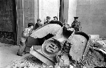
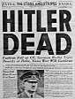

This website gives information about the exact location of historical Hitler sites. The place Adolf Hitler grew up, the houses he lived in, the trips he made and the halls he spoke in: most of them can be found back on the Hitler Pages. Everybody who has a historical interest in the Second World War and Hitler is welcome to use the information. With a lot of pictures we try to show what a site looked like when Hitler was there and what it looks like today. You’ll find out that there is a lot still standing...
 